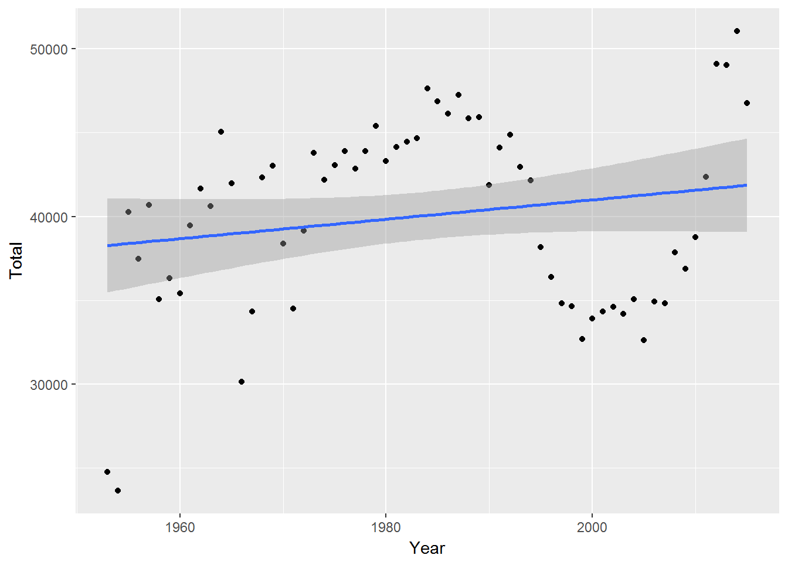
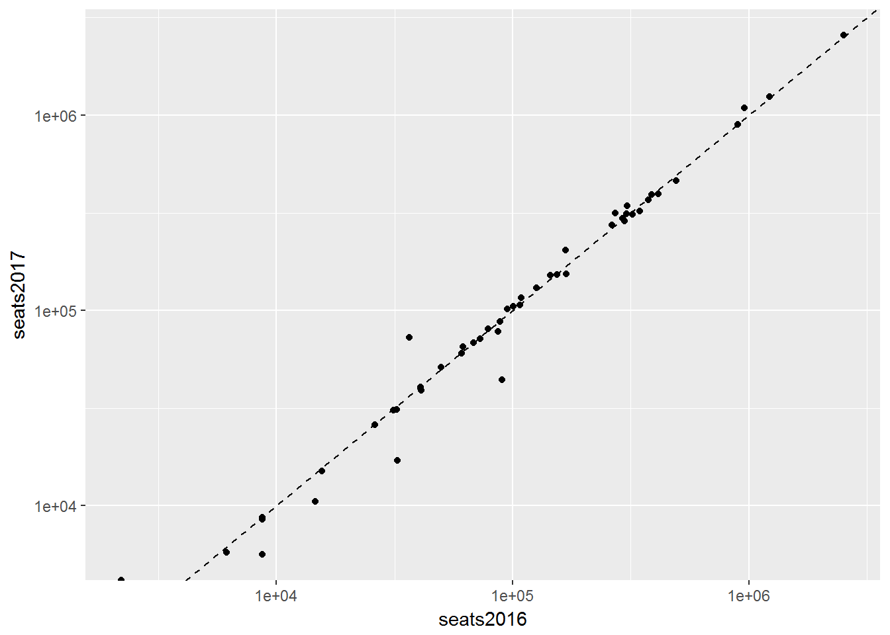
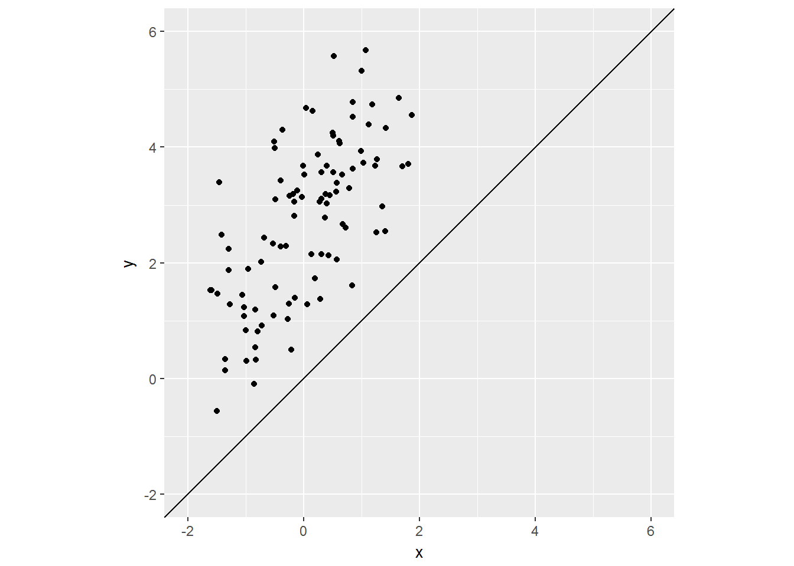
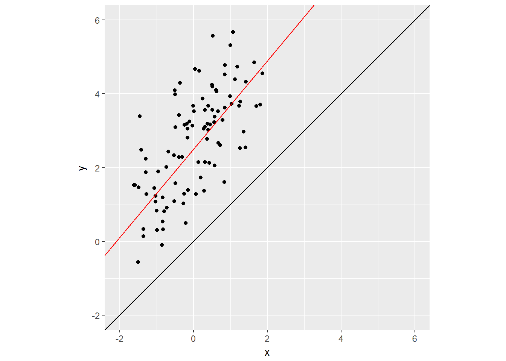
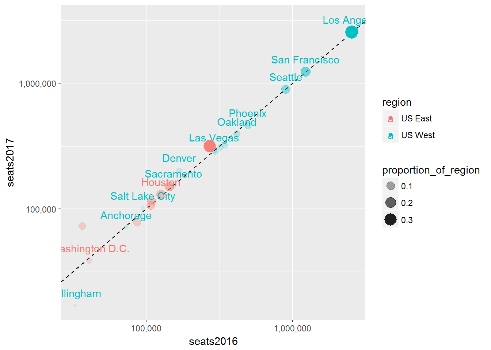
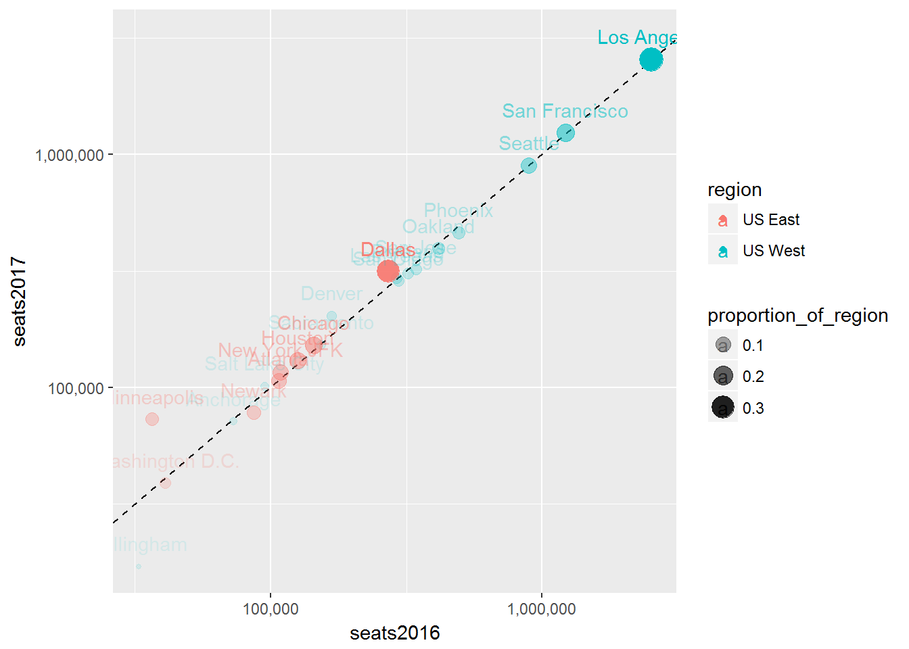

Lecture 3 Facets, Bubbles, and Transparency
3.1 Data
For this session, we’ll explore the Hawaii Tourism Authority (HTA) Air Seat Projection. I’ll be working with the Air Seat Projection for 2017 (revised 06/17). Feel free to download the latest available.
3.1.1 Importing non-standard Excel files
The first steps in preparing a non-standard Excel file are (1) identify how many rows to skip and (2) provide column names if the column names are not neatly contained in a single row. You may also want to set the range if there is metadata at the end of the table you are importing. range overrides any skip setting, so we wont have to specify the number of rows to skip.
library(readxl)
seats <- read_excel("data/2017 Air Seat Forecast rev 0617.xls", col_names = c(
"dep_city",
"seats2017Q1", "seats2017Q2", "seats2017Q3", "seats2017Q4", "seats2017",
"seats2016Q1", "seats2016Q2", "seats2016Q3", "seats2016Q4", "seats2016",
"seatschangeQ1", "seatschangeQ2", "seatschangeQ3", "seatschangeQ4", "seatschange"
), range = "A5:P78")
seats## # A tibble: 74 × 16
## dep_city seats2017Q1 seats2017Q2 seats2017Q3 seats2017Q4 seats2017
## <chr> <dbl> <dbl> <dbl> <dbl> <dbl>
## 1 TOTAL 2987920 3016376 3168233 3050112 12222641
## 2 SCHEDULED 2966915 2996155 3140998 3029794 12133862
## 3 CHARTERS 21005 20221 27235 20318 88779
## 4 <NA> NA NA NA NA NA
## 5 US TOTAL 1996549 2108969 2215424 2071513 8392455
## 6 SCHEDULED 1978616 2091981 2200195 2055171 8325963
## 7 CHARTERS 17933 16988 15229 16342 66492
## 8 <NA> NA NA NA NA NA
## 9 US WEST 1717254 1837080 1943653 1817441 7315428
## 10 Anchorage 25758 15105 13674 17013 71550
## # ... with 64 more rows, and 10 more variables: seats2016Q1 <dbl>,
## # seats2016Q2 <dbl>, seats2016Q3 <dbl>, seats2016Q4 <dbl>,
## # seats2016 <dbl>, seatschangeQ1 <dbl>, seatschangeQ2 <chr>,
## # seatschangeQ3 <chr>, seatschangeQ4 <dbl>, seatschange <dbl>Let’s add a region identifier
library(dplyr)
us_west_range <- 10:23
us_east_range <- 26:33
japan_range <- 40:45
canada_range <- 48:52
other_asia_range <-55:58
oceania_range <- 61:64
other_range <- 67:74
seats$region <- NA
seats[us_west_range,]$region <- "US West"
seats[us_east_range,]$region <- "US East"
seats[japan_range,]$region <- "Japan"
seats[canada_range,]$region <- "Canada"
seats[other_asia_range,]$region <- "Other Asia"
seats[oceania_range,]$region <- "Oceania"
seats[other_range,]$region <- "Other"
seats <- seats %>%
filter(!is.na(region))
seats## # A tibble: 49 × 17
## dep_city seats2017Q1 seats2017Q2 seats2017Q3 seats2017Q4
## <chr> <dbl> <dbl> <dbl> <dbl>
## 1 Anchorage 25758 15105 13674 17013
## 2 Bellingham 10198 318 NA 6519
## 3 Denver 55803 51654 52585 43290
## 4 Las Vegas 70514 74322 75839 75415
## 5 Los Angeles 548935 647498 715338 647703
## 6 Oakland 84571 104810 116015 90703
## 7 Phoenix 113046 115125 125348 108863
## 8 Portland 90207 71068 65997 81673
## 9 Sacramento 37620 38318 38456 38456
## 10 Salt Lake City 26370 23751 22968 28322
## # ... with 39 more rows, and 12 more variables: seats2017 <dbl>,
## # seats2016Q1 <dbl>, seats2016Q2 <dbl>, seats2016Q3 <dbl>,
## # seats2016Q4 <dbl>, seats2016 <dbl>, seatschangeQ1 <dbl>,
## # seatschangeQ2 <chr>, seatschangeQ3 <chr>, seatschangeQ4 <dbl>,
## # seatschange <dbl>, region <chr>3.2 Facets
Let’s do a simple plot comparing 2017 seats outlook to the 2016 seats outlook.
library(ggplot2)
seats %>%
ggplot(aes(seats2016, seats2017)) +
geom_point()
The distribution of this data looks like a good candidate for using the log scale (high concentration in lower values and lower concentration in higher values).
seats %>%
ggplot(aes(seats2016, seats2017)) +
geom_point() +
scale_x_log10() +
scale_y_log10() +
geom_abline(lty = 2) # dashed line type (lty)## Warning: Transformation introduced infinite values in continuous y-axis
Since we have region identifiers it would be nice to divide our data and see charts of each region side-by-side. Facets allow us to make multiple charts based on a variable or set of variables.
seats %>%
ggplot(aes(seats2016, seats2017)) +
geom_point() +
scale_x_log10() +
scale_y_log10() +
geom_abline(lty = 2) +
facet_wrap(~ region) +
coord_fixed()## Warning: Transformation introduced infinite values in continuous y-axis
An alternative representation is to present each region using color:
seats %>%
ggplot(aes(seats2016, seats2017, color = region, label = dep_city)) +
geom_point() +
scale_x_log10() +
scale_y_log10() +
geom_abline(lty = 2) +
geom_text(check_overlap = TRUE, nudge_y = 0.1)## Warning: Transformation introduced infinite values in continuous y-axis
## Warning: Transformation introduced infinite values in continuous y-axis
3.3 Bubbles
Bubble charts are scatter plots (geom_point) with points that vary in size corresponding to the value of a given variable. Let’s create a measure of the size of a city’s seats relative to its regional total.
seats <- seats %>%
group_by(region) %>%
mutate(proportion_of_region = seats2017/sum(seats2017))
seats## Source: local data frame [49 x 18]
## Groups: region [7]
##
## dep_city seats2017Q1 seats2017Q2 seats2017Q3 seats2017Q4
## <chr> <dbl> <dbl> <dbl> <dbl>
## 1 Anchorage 25758 15105 13674 17013
## 2 Bellingham 10198 318 NA 6519
## 3 Denver 55803 51654 52585 43290
## 4 Las Vegas 70514 74322 75839 75415
## 5 Los Angeles 548935 647498 715338 647703
## 6 Oakland 84571 104810 116015 90703
## 7 Phoenix 113046 115125 125348 108863
## 8 Portland 90207 71068 65997 81673
## 9 Sacramento 37620 38318 38456 38456
## 10 Salt Lake City 26370 23751 22968 28322
## # ... with 39 more rows, and 13 more variables: seats2017 <dbl>,
## # seats2016Q1 <dbl>, seats2016Q2 <dbl>, seats2016Q3 <dbl>,
## # seats2016Q4 <dbl>, seats2016 <dbl>, seatschangeQ1 <dbl>,
## # seatschangeQ2 <chr>, seatschangeQ3 <chr>, seatschangeQ4 <dbl>,
## # seatschange <dbl>, region <chr>, proportion_of_region <dbl>Now we can modify the chart to show the importance of each city in the context of its region.
seats %>%
filter(region %in% c("US West", "US East")) %>%
ggplot(aes(seats2016, seats2017, color = region, label = dep_city)) +
geom_abline(lty = 2) +
geom_point(aes(size = proportion_of_region)) +
scale_x_log10(labels = scales::comma) +
scale_y_log10(labels = scales::comma) +
geom_text(check_overlap = TRUE, nudge_y = 0.1)3.4 Transparency
We can also use transparency (or alpha) to make less important points less visible. We do this by setting the alpha aesthetic. Let’s try adding the alpha setting to the geom_point() call first.
seats %>%
filter(region %in% c("US West", "US East")) %>%
ggplot(aes(seats2016, seats2017, color = region, label = dep_city)) +
geom_abline(lty = 2) +
geom_point(aes(size = proportion_of_region, alpha = proportion_of_region)) +
scale_x_log10(labels = scales::comma) +
scale_y_log10(labels = scales::comma) +
geom_text(check_overlap = TRUE, nudge_y = 0.1)
Let’s add the alpha to the ggplot-level aesthetic instead, so that it also affects the text labels.
seats %>%
filter(region %in% c("US West", "US East")) %>%
ggplot(aes(seats2016, seats2017, color = region, label = dep_city, alpha = proportion_of_region)) +
geom_abline(lty = 2) +
geom_point(aes(size = proportion_of_region)) +
scale_x_log10(labels = scales::comma) +
scale_y_log10(labels = scales::comma) +
geom_text(nudge_y = 0.1)
We can combine all the regions now and use transparency to help us see how many cities are in the same area on the plot by how dark a region is.
seats %>%
ggplot(aes(seats2016, seats2017, label = dep_city, alpha = proportion_of_region)) +
geom_abline(lty = 2) +
geom_point(aes(size = proportion_of_region)) +
scale_x_log10(labels = scales::comma) +
scale_y_log10(labels = scales::comma) +
geom_text(aes(color = region), hjust = "right", vjust = "center")## Warning: Transformation introduced infinite values in continuous y-axis
## Warning: Transformation introduced infinite values in continuous y-axis
Let’s use facets so we can combine everything we’ve done so far.
seats %>%
ggplot(aes(seats2016, seats2017, label = dep_city, alpha = proportion_of_region)) +
geom_abline(lty = 2) +
geom_point(aes(size = proportion_of_region), color = "darkblue") +
scale_x_log10(labels = scales::comma) +
scale_y_log10(labels = scales::comma) +
geom_text(hjust = "right", vjust = "center", nudge_x = -0.3) +
facet_wrap(~ region)## Warning: Transformation introduced infinite values in continuous y-axis
## Warning: Transformation introduced infinite values in continuous y-axis3.5 Assignment
Create a bubble plot highlighting the change in year-on-year growth rates for different quarters. Plot seatschangeQ3 on the x axis and seatschangeQ4 on the y axis. Use seats2017 to determine the size of each bubble. Facet by region.